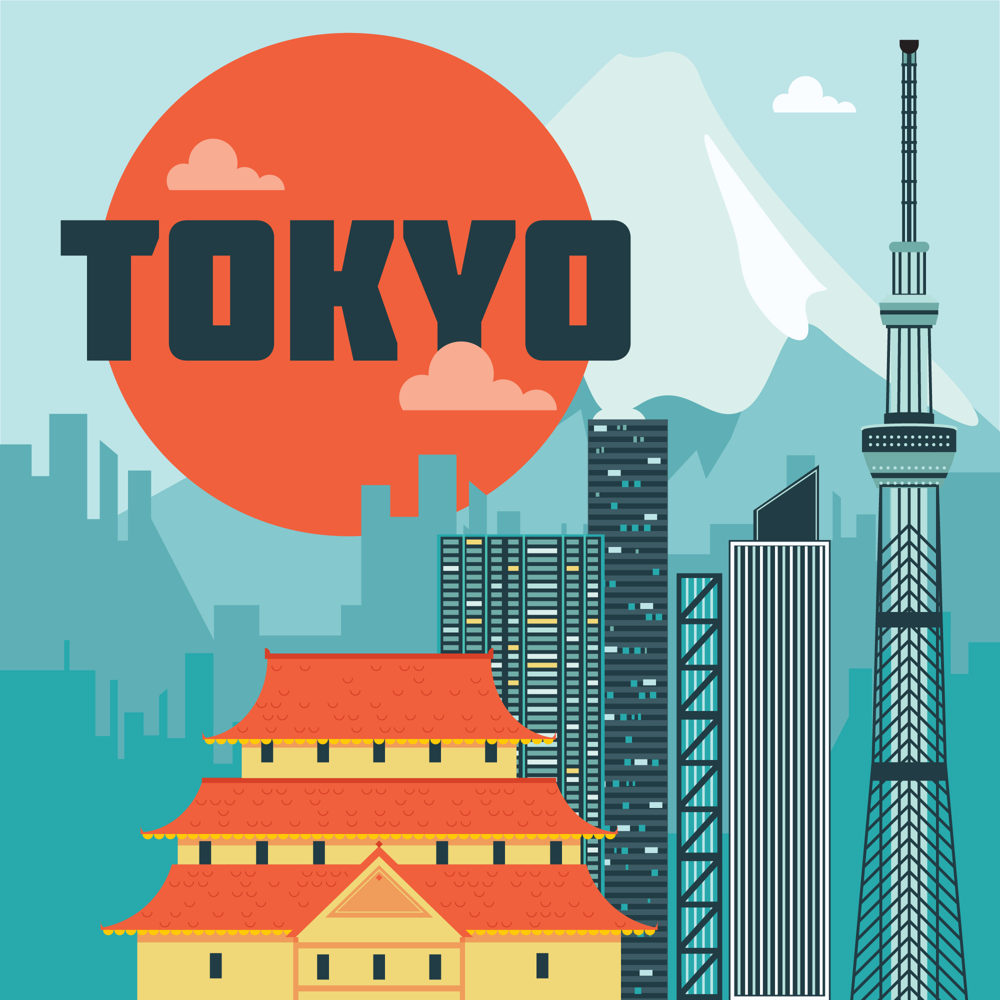
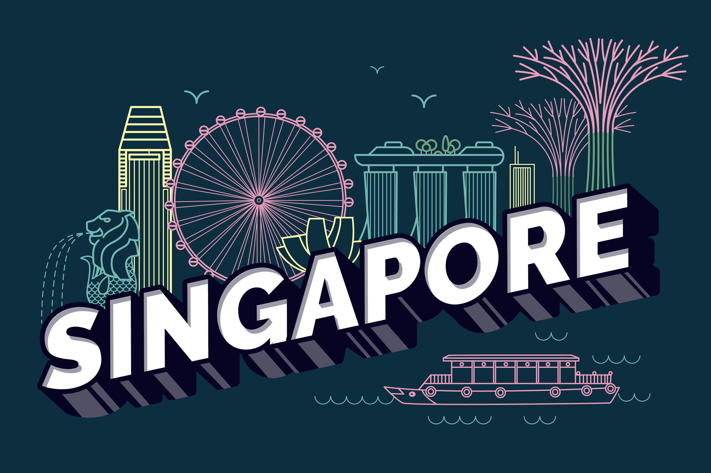

Your adventure starts here!
Welcome to Tokyo, the vibrant capital of Japan! A city where tradition meets cutting-edge modernity, Tokyo offers travelers a unique blend of rich history, diverse culture, and breathtaking sights. Whether you're wandering through ancient temples or exploring futuristic neighborhoods, Tokyo is a destination that promises unforgettable experiences.

Tokyo, originally a small fishing village known as Edo, has transformed into one of the world's most dynamic cities.
Learn about the Edo period (1603-1868), when Tokyo became the center of political power in Japan. The Tokugawa shogunate established its government here, leading to significant cultural and economic growth.
Experience the dramatic changes during the Meiji Restoration (1868), when Japan opened up to the West and began modernizing. This era saw the construction of many iconic buildings and the introduction of Western technologies.
Understand how Tokyo rebuilt itself after World War II, emerging as a global metropolis. The city's rapid economic growth in the late 20th century transformed it into a hub of innovation and culture.
Tokyo is a melting pot of traditions and modern influences, offering a rich cultural landscape.
Participate in local festivals such as the famous Sanja Matsuri in Asakusa, celebrating the spirits of the local shrine with lively parades and traditional performances.
Indulge in Tokyo's culinary delights, from Michelin-starred sushi restaurants to casual ramen shops. Don't miss trying local specialties like tempura, yakitori, and street food at bustling markets.
Immerse yourself in Tokyo's arts scene, from traditional kabuki performances to contemporary art exhibitions in neighborhoods like Roppongi and Shibuya. Explore the historic Yanaka district, where you can find traditional crafts and artisanal shops.
Tokyo boasts a wealth of attractions that cater to every interest.
Visit the stunning Senso-ji Temple in Asakusa, Tokyo's oldest temple, which offers a glimpse into the city's spiritual heritage.
Marvel at the futuristic architecture of Tokyo Skytree, the tallest structure in Japan, offering panoramic views of the city.
Take a break from the urban hustle by visiting Ueno Park, home to museums, a zoo, and beautiful cherry blossoms in spring. Don’t miss Shinjuku Gyoen, a spacious park that combines traditional Japanese, English, and French landscapes.
Welcome to Beijing, the historic capital of China! A city where ancient traditions harmoniously coexist with modern developments, Beijing offers visitors a fascinating journey through time. Explore the majestic Great Wall, wander through the Forbidden City, and savor the rich flavors of Peking duck in its bustling street markets. With its vibrant culture and stunning architecture, Beijing invites travelers to experience the heart of China's heritage and innovation.
Beijing, the capital of China, has a rich history dating back over 3,000 years and has served as the political, cultural, and educational center of the nation.
Explore the Imperial era when Beijing became the capital during the Ming Dynasty (1368-1644), known for its grand architecture and cultural advancements.
Learn about the significant changes in the 20th century, including the establishment of the People's Republic of China in 1949, which transformed the city dramatically.
Understand how Beijing has evolved into a modern metropolis, blending traditional culture with contemporary urban life.
Beijing boasts a vibrant culture that reflects its long history and diverse influences.
Experience local festivals such as the Chinese New Year and the Mid-Autumn Festival, celebrated with traditional customs, food, and performances.
Indulge in Beijing's culinary delights, including Peking duck, jiaozi (dumplings), and various street foods that reflect the city's diverse palate.
Immerse yourself in the arts scene, from traditional Peking opera to contemporary art galleries and performances throughout the city.
Beijing is home to numerous iconic attractions that showcase its rich heritage.
Visit the Great Wall of China, a UNESCO World Heritage Site, which offers breathtaking views and a glimpse into ancient engineering.
Explore the Forbidden City, the former imperial palace, and marvel at its stunning architecture and vast collection of historical artifacts.
Discover the Temple of Heaven, a masterpiece of Chinese architecture where emperors once performed rituals for good harvests.
Welcome to Seoul, the dynamic capital of South Korea! A city that beautifully blends the old and the new, Seoul captivates travelers with its vibrant energy and rich history. Discover ancient palaces, such as Gyeongbokgung, and indulge in the latest trends in fashion and technology in bustling districts like Gangnam. With its delicious street food, lively nightlife, and warm hospitality, Seoul is a destination that promises excitement and unforgettable memories.
Seoul, the capital of South Korea, has a rich history that spans over 2,000 years, marked by significant cultural and political developments.
Explore the founding of Seoul as the capital of the Baekje Kingdom in 18 BCE, and its subsequent importance through the Silla and Goryeo dynasties.
Learn about the Joseon Dynasty (1392-1910), during which Seoul was established as the core of Korean culture, politics, and education.
Understand how Seoul transformed in the 20th century, particularly after the Korean War, becoming a modern metropolis and a leader in technology and culture.
Seoul is a vibrant city that blends traditional Korean culture with modern influences, offering a diverse cultural experience.
Participate in cultural festivals such as the Seoul Lantern Festival and Chuseok, celebrating harvest time with traditional customs and food.
Indulge in Seoul's culinary delights, including kimchi, bulgogi, and street food from bustling markets like Gwangjang Market.
Immerse yourself in Seoul's arts scene, from traditional performances like Nanta to contemporary K-pop concerts and art exhibitions in Hongdae.
Seoul is packed with attractions that showcase its unique history and modernity.
Visit Gyeongbokgung Palace, the largest of the Five Grand Palaces, and witness the changing of the guard ceremony.
Head to N Seoul Tower for panoramic views of the city and a chance to leave a love lock on the tower's fence.
Explore Bukchon Hanok Village, a preserved area showcasing traditional Korean houses, or hanoks, and experience the charm of old Seoul.
Welcome to Singapore, a dazzling city-state known for its multicultural charm and modern skyline! A destination where East meets West, Singapore offers a unique blend of diverse cultures, stunning architecture, and lush green spaces. Stroll through the vibrant streets of Little India, marvel at the futuristic Gardens by the Bay, and savor delectable dishes from its famous hawker centers. With its reputation for cleanliness and safety, Singapore is a captivating oasis for travelers seeking adventure and relaxation.
Singapore's history is marked by its strategic location as a trading port and its transformation into a global financial hub.
Explore the early settlement of Singapore in the 14th century as part of the Srivijaya Empire and its later significance during trade routes.
Learn about the establishment of Singapore as a British trading post in 1819, which led to rapid growth and development.
Understand Singapore's path to independence in 1965, and how it has evolved into a modern, multicultural nation.
Singapore is a melting pot of cultures, reflected in its diverse traditions, festivals, and culinary offerings.
Participate in vibrant festivals such as Chinese New Year, Hari Raya Puasa, and Deepavali, showcasing the rich cultural tapestry of the nation.
Indulge in Singapore's famous hawker food, including dishes like Hainanese chicken rice, chili crab, and laksa, representing various cultures.
Immerse yourself in the arts scene, from traditional performances like Chinese opera to contemporary art exhibitions and multicultural shows.
Singapore offers a wide array of attractions that reflect its unique heritage and modernity.
Visit Marina Bay Sands, an iconic integrated resort with a stunning sky park offering panoramic views of the city skyline.
Explore Gardens by the Bay, a futuristic park featuring the famous Supertree Grove and beautiful flower domes.
Enjoy a day at Sentosa Island, known for its beaches, Universal Studios, and various attractions perfect for families.